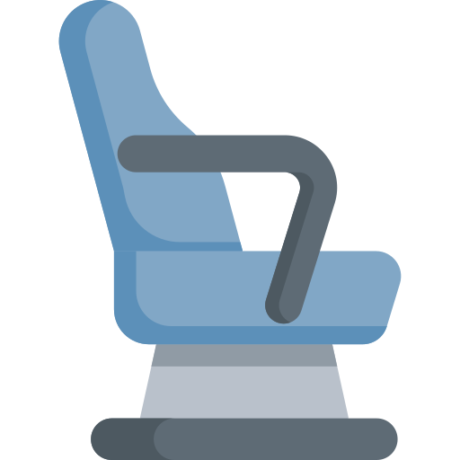

Ne ratez plus aucune place TGV Max
L'outil indispensable pour rentabiliser votre abonnement Max Jeune ou Sénior.
L'outil indispensable pour rentabiliser votre abonnement Max Jeune ou Sénior.
TGV Max est l'abonnement SNCF qui vous donne accès à des billets TGV Inoui & Intercités sans frais supplémentaires par trajet — idéal pour les voyageurs fréquents et les nomades.
 −30 % garantis toute l'année en 1ère & 2nde classe
−30 % garantis toute l'année en 1ère & 2nde classe
Jusqu'à 6 réservations simultanées −30 % garantis toute l'année en 1ère & 2nde classeChaque billet TGV Inoui et Intercités est inclus dans votre abonnement. Pas de surprise à la caisse.
Plus de 200 destinations desservies partout en France, de Paris à Nice en passant par Bordeaux ou Strasbourg.
Les places TGV Max sont attribuées en temps réel et peuvent partir vite. TrainNomad vous aide à les repérer rapidement.
Vous pouvez réserver jusqu'à 30 minutes avant le départ — parfait pour voyager spontanément.
Ces liaisons sont parmi les plus recherchées par les abonnés Max. Cliquez pour lancer la recherche directement.
⚡ Les places Max sont limitées et mises à jour quotidiennement — les disponibilités peuvent changer d'ici votre réservation sur SNCF Connect.